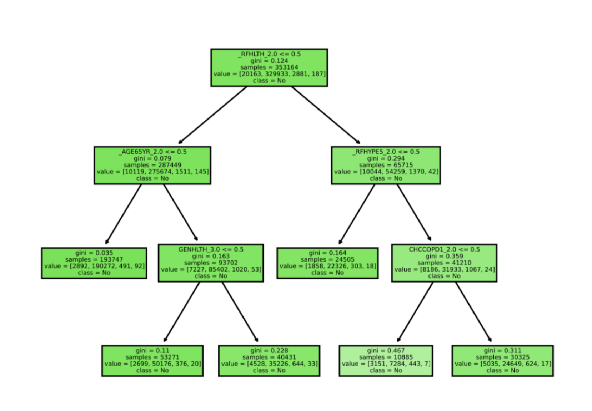
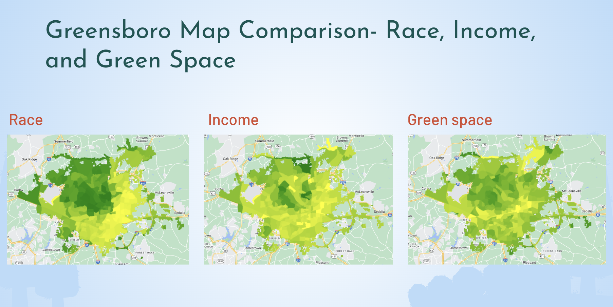
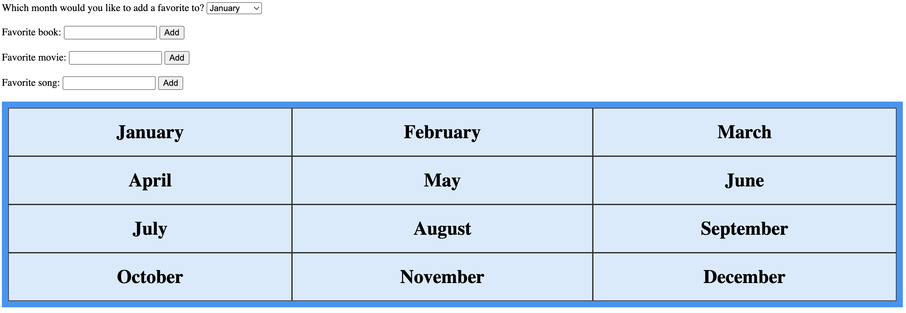
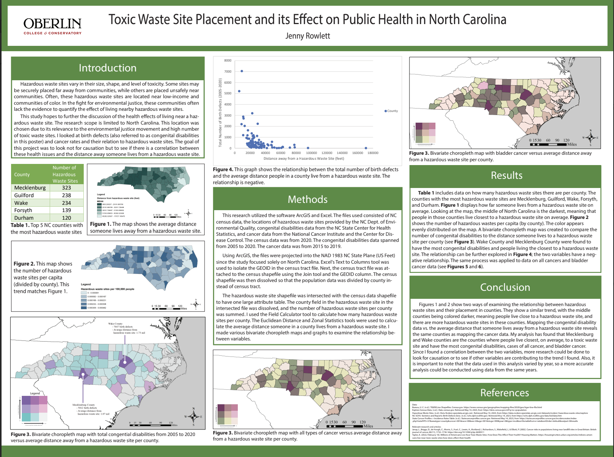

Welcome! My name is Jenny.
I am a senior at Oberlin College majoring in Computer Science and minoring in Environmental Studies. I am passionate about leveraging data science, machine learning, and GIS technologies to tackle environmental challenges. Throughout my time at undergraduate experience, I have contributed to various research projects, honing my analytical and problem-solving skills. I am excited about what's next!
Research
-
Regulating Explainability in Machine Learning
Applications
In the summer of 2023, I had the privilege of working under Dr. Christian Kästner and Ph.D. student Nadia Nahar as part of Carnegie Mellon University's REUSE program. With a team of sociologists, we examined what policies aimed at explainability to regulate machine learning applications should look like. Some of our findings include: iterative and continuous feedback was useful to improve policy drafts over time, discussing evidence of compliance was necessary during policy design, and human-subject studies were found to be an important form of evidence. I'm excited to announce that our paper got accepted into the ACM FAccT '24 conference in Brazil. -
Genetic Algorithm for COVID Model Outcomes
I collaborated with two others to program a genetic algorithm in Python that transforms machine learning input into a new form. This research was conducted under Professor Adam Eck. -
Analyzing Ocean Salinity to learn about the Climate
As part of Oberlin's January Winter Term in 2023, I worked with an oceanography researcher to analyze short-term sea surface salinity data and examine how it might correlate with other factors. You can read more about this project here.
Projects

Predictors of Health Disease
I worked in a team of three to examine what behavioral determinants of health could lead to someone being at risk for heart disease. We analyzed three machine-learning models: random forests, decision trees, and neural networks.
Python Sci-kit learn CSCI 374
Analysis of Green Space, Race, and Class
I explored various green space metrics on satellite imagery. Next, I analyzed the relationship between urban green space, race, and class in my hometown of Greensboro, North Carolina. My final paper can be found here.
ArcGIS Google Earth Engine Javascript ENVS 202
Squirrel Game
I collaborated with four other Oberlin students to create a multiplayer game inspired by the mobile game Among Us. This game taught us about networking, game design principles, and maintaining good documentation for other team members.
Godot Game Engine GDScript Personal
Code Plagarism Detector
I worked on a team of four to try and detect code plagarism utilizing code stylometry. Code stylometry is the style of how the code is written.
C# CSCI 241
Crowdsourcing for Trail Signage
I created a comprehensive design document for how to implement a technological system that would utilize crowd workers and improve trail signage.
Technical Writing Design CSCI 317
Monthly Favorites Tracker
In order to learn web development, I made this web application that allows you to record your favorite books, songs, movies, etc, by month.
HTML CSS Javascript

Toxic Waste Site Placement and Its Effect on Public Health
I analyzed the relationship between hazardous waste sites, race, and class at the county level.
ArcGIS Microsoft Excel Adobe Illustrator GEOS 335Fun Facts
- I love coffee.
- I am often the fastest walker in a group despite having the shortest legs.
- I am usually the first person accused in deception games. I am always looking for tips to improve my deception skills.
- I think cats are better than dogs.
- I really like playing Clash of Clans and Star Realms.